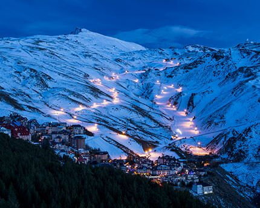
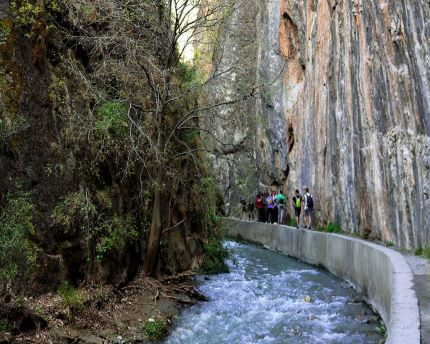
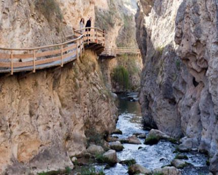
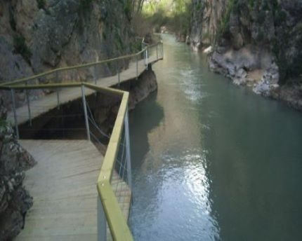
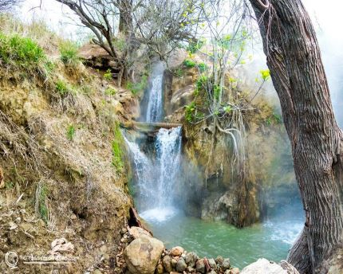
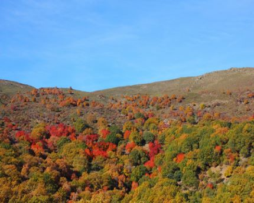
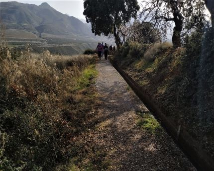
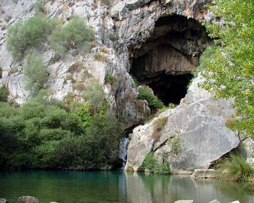
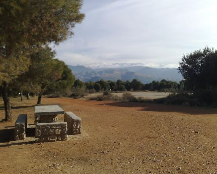

SENDERISMO GRANADA
Eventos
Descubre
Crea tu ruta

Sierra Nevada

Ruta de los Cahorros

Río Castril

Ruta del Gollizno

Termas de Santa Fe

Dehesa del Camarate

Las acequias del Dílar

Cuevas de la Sierra de Alfagüara

Llano de la Perdiz
ENLACES DE INTERÉS
Agenda Cultural Granada
+ Senderismo Granada
Turismo Granada Oficial
8 Mejores Apps de Senderismo
Wikipedia Granada
Granada CF
TripAdvisor Granada
Granada CF
Marina Hernández Bautista. Todos los Derechos Reservados.